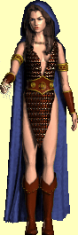

Druidi
 |
 |
Výskyt: Hlavní domovinou druidù je Støíbrná zátoka, kde zalo¾ili významné obchodní centrum. V nedávných dobách se v¹ak z hlavního øádu od¹tìpila skupinka rebelù pod vedením Cedrika Drutherse, která se velmi brzy spojila se Stínovou gildou a hovoøí se i o napojení na øád Baa. Hlavní základnou je Monolit ve Støíbrné zátoce, který je i na povrchu bedlivì støe¾en. Malé skupinky druidù pak nalezneme také v Chrámu Mìsíce a v Nejvy¹¹ím chrámu Baa.
Druid |
Veledruid |
Nejvy¹¹í druid |
|
| Level | 10 | 16 | 28 |
| Body zdraví | 40 | 73 | 162 |
| Tøída zbroje | 12 | 16 | 22 |
| Umí létat | ne | ne | ne |
| Povaha | normální | agresivní | agresivní |
| Pohyblivost | støední | støední | nízká |
| Cílení | rytíø | rytíø | 2 postavy |
| Zku¹enosti za zabití | 200 | 416 | 1064 |
| Útok 1 (hlavní) | oheò, 2D4+3 | chlad, 2D4+6 | magie, 2D4+12 |
| Útok 2 | - | - | - |
| Vyu¾ití útoku 2 | - | - | - |
| Kouzlo | Zraò,N,2 | Smrtící roj,N,3 | Ohnivá koule,M,6 |
| Vyu¾ití kouzla | 40% | 40% | 30% |
| Odolnost proti ohni | 10 | 20 | 30 |
| Odolnost proti elektøinì | 10 | 20 | 30 |
| Odolnost proti chladu | 10 | 20 | 30 |
| Odolnost proti jedu | 10 | 20 | 30 |
| Odolnost proti fyzickému útoku | 0 | 0 | 0 |
| Odolnost proti magii | 10 | 20 | 30 |
| Speciální schopnosti | - | - | krade manu |
| Poklad | 5%10D10+L1 ostatní | 10%20D10+L2 ostatní | 20%50D10+L3 ostatní |
copyright 2002 - 2022 by Petr 'Elemir' Levák v¹echna práva vyhrazena